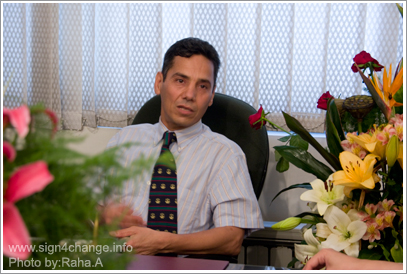

|
|
دیدار با عبدالفتاح سلطانی پس از آزادی از زندان: وقتی حکومت به وظیفه اش عمل نکند ما نیز هیچ تکلیفی نداریم
سه شنبه10 شهریور 1388

تغییر برای برابری: عبدالفتاح سلطانی وکیل مدافع حقوق بشر که جنبش زنان همواره از حمایت ها و تلاش های او بهره برده اند و در جریان اعتراض های بعد از انتخابات بازداشت شده بود پس ا ز72 روز آزاد شد. به همین مناسبت جمعی از فعالان کمپین با او دیدار کردند.
سلطانی که با روحیه ای بسیار عالی و استوار همچون گذشته، پذیرای فعالان کمپین بود از دوران بازداشت خود گفت و تحولات اخیر را مورد بررسی قرار داد. او با بیان این که "رابطه ی بین مردم و حکومت یک رابطه ی دو طرفه است" افزود:" حق و تکلیف هم دو طرفه است. ما یک حقی داریم به گردن حکومت و حکومت هم به گردن ما حقی دارد. وقتی حکومت به وظیفه اش عمل نکند ما نیز هیچ تکلیفی نداریم. وقتی حکومت حق من را رعایت نکند و به خود اجازه بدهد هر کار خلاف قانون اساسی هم انجام بدهد نمی تواند از مردم توقع داشته باشد مو به مو قوانین را اجرا کنند حتا بنا به این فرض که مردم در تظاهراتی که کرده اند در بعضی موارد قانون را رعایت نکرده باشند زمانی می توانند این رفتار را با مردم داشته باشند که خودشان به قوانینی که وضع کرده اند پایبند باشند. خود قاضی پیش من اقرار کرد که بله ما قبول داریم که سیلی آمد و در حق بسیاری از افراد هم ظلم شد. گفتم وقتی خود شما این حرف را می زنید نمی توانید مردم را به صلیب بکشید. وقتی مردم می بینند که در کنارشان کسی تیر می خورد نمی توانند ساکت بنشینند".
در این دیدار آقای سلطانی همچنین در مورد وضعیت آقای کیوان صمیمی هم اظهار نگرانی کرد: "خيلي پرس و جو كردم ولي متاسفانه خبري به دست نياوردم . اما باید تلاش کنیم که از طریق تماس با خانواده ی او وضعیت ایشان را پیگیری کنیم".
تشکیک در انتخابات اتهامی که در هیچ کجای قانون نیست!
آقای سلطانی در خصوص اتهام "تشکیک در انتخابات " که به او تفهیم شده بود توضیح داد: "اصلا چنین اتهامی در مجموعه قوانین وجود ندارد. بعد از 27 ساعت که از بازداشتم گذشته بود آقای قاضی متین راسخ بازپرس شعبه اول امنیت این اتهام را به من تفهیم کرد. در حالی که ایشان حق مداخله در پرونده ی من نداشت و من گفتم کارتان غیرقانونی است. بعد از این که به سوالات او جوابی ندادم تهدید کردند که تعزیر خواهم شد. روز چهارم قبول كردند كه قاضي حق دخالت ندارد و آقاي حيدري فر اتهامات تشکیل گروه براي برهم زدن امنيت ملي که منظور كميته دفاع از انتخابات آزاد و كانون مدافعان وتبليغ عليه نظام بود را به من تفهیم کردند و در پاسخ به من که پرسیدم كجا من عليه نظام تبليغ كرده ام جواب دادند بعدا می فهمی. آخر هم بعد از 72 روز بازداشت بی آن که بفهمم واقعن چه جرمی مرتکب شده ام و کجا علیه نظام تبلیغ کرده ام با قرار وثیقه ی صد میلیون تومانی آزاد شدم. همان جا كه بودم حداد زنگ زد و گفت ترا خدا به سلطاني بگوييد مي رود بيرون حرف نزند. يك ماهي تقيه كند اوضاع بد است. گفتم بيرون بروم عليه تو شكايت مي كنم و حرف هم ميزنم".
سلطانی درمورد جابه جایی های اخیر در مسئولان دستگاه قضایی به ویژه آقای مرتضوی و جانشین وی گفت : " از فردی که جانشین آقای مرتضوی شده است اطلاعات محدودی دارم اما شنیده ام که انسان خوبی است. البته ما این افراد را نسبت به شرایط و قضات دیگر دستگاه قضایی ایران قضاوت می کنیم نه با کشورهای دیگر. آقای درخشان که معاون ایشان است هم سوابق خوبی دارد و اگر ایشان هم عملکردی مانند آقای آوایی داشته باشند می توان امید داشت که تکلیف بسیاری از پرونده های فعلی روشن شود. من در یکی از مصاحبه هایم به خبرنگاری که پرسید چه خواسته ای دارم گفتم خواسته ام این است که مرتضوی برکنار شود و همچنین تیم معاونت امنیت قانونمند نیستند حالا باید دید چگونه عمل می کنند".
بازداشت گاه هاي غيرقانوني وغيررسمي
سلطانی در خصوص افشاگری های اخیر در مورد کهریزک، این بازداشت گاه را غیر قانونی دانست و گفت:" باید در مورد سوابق رفتار با زندانیان نه تنها در این دوره بلکه در دو سال پیش هم تحقیق و بررسی های کاملی به عمل آید. می گویند اشرار در آن جا نگهداری می شدند چه ربطی دارد ؟ ما حق نداریم هر بلایی که به تصور نمی آید را بر سر انسان ها و به صرف این که این افراد اشرار هستند بیاوریم، آنها هم انسانند و باید از حقوق انسانی و قانونی خود برخوردار باشند. يكي از مسائل مهمي كه در بحث دمكراسي مطرح مي شود اين است كه حقوق همين اقليت خلافكار هم رعايت شود اگر حقوق اين ها رعايت شد حقوق بقيه هم رعايت مي شود حتي اگر جرمشان هم ثابت شد بايد قانونی با آن ها برخورد شود. گفته می شود که تعداد بازداشت شدگان تا هشتم و نهم تیرماه بیش از 13 هزار نفر بودو این در حالی بود که اسم بسیاری از بازداشت شدگان در لیست ها نبود".
این وکیل مدافع حقوق بشر ادامه داد :"بارها در مورد كهريزك تذكر داده شده بود تا چنين اتفاقي افتاد. پرونده ی این بازداشتگاه باید شفاف شود چرا که مساله از موارد کنونی فراتر است. باید روشن شود که در این دو سال كه كهريزك باز بوده چند كشته داده؟ چه برخوردي با اشرار شده؟ چه کسی به این آمارها دسترسی دارد و چه افرادی می بایست به این برخوردها رسیدگی می کردند. گلايه من هميشه ازخبرنگاران حوادث اين است كه وقتي وارد آگاهي مي شوند و در مواردی متهمي را مي بينند كه كتك خورده منعكس نمي كنند. آنها حق ندارند كه متهمي را كتك بزنند. ما سكوت مي كنيم تا وقتي كه روشنفكري يا دانشجويي اين اتفاق برايش افتاد آن وقت دادمان در مي آيد و اعتراض مي كنيم. ما نبايد اجازه دهيم سر هيچ كس اين بلا بيايد. من در مورد خفاش شب و بيجه هم در مصاحبه ای و اعتراض كردم و گفتم :نبايد كسي كه متهم به اعدام است مثل بيجه به او چاقو زد به صرف اين كه گناهكار است. راه برخورد با متهمین فشار فیزیکی نیست و باید افسران در این مورد تحت آموزش های علمی قرار گیرند. حتي اگر به يك سارق ظلم شود بايد جامعه اعتراض کند و دستگاه قضایی درست برخورد کند".
عضو کانون مدافعان حقوق بشر كهريزك را یک نمونه از بازداشت گاه های غیر قانونی برشمرد: "بايد جلوي بازداشت گاه هاي غيرقانوني وغيررسمي را گرفت. هيچ زنداني نبايد خارج ازنظارت سازمان زندان ها باشد. به نظرمن شوراي شهر بايد هر از چندگاهي از زندان ها بازديدكنند. مراقب بهداشت زندانيان باشند. لباسي كه به من دادند نشسته بود دستمال كاغذي استفاده شده اي درون جيبش بودكه معلوم بودشسته نشده خوب من تنم نكردم ورفتم وگفتم به من تشت و پودر بدهيد كه خودم لباس هايم را شستم . بعضي ها ميگويند مهم نيست .چرا مهم است. شوراي شهر بايد بازديد كند نظارت داشته باشداگر ضوابط مراعات شود كه نبايداز نظارت بترسند".
تهدید خانواده های زندانیان
سلطانی در انتهای این دیدار به مشکلاتی که بازداشت شدگان اخیر در خصوص معرفی وکیل به دادگاه دارند اشاره کرد: "يكي از مشكلاتي كه ما آلان داريم وكلايي هستند كه به خانواده ها معرفي ميشوند اما مانع حرف زدن خانواده مي شوند. از زندان كه بيرون آمدم اعلام كردم كه همراه با تيمي كه در اختيار داريم وكالت تمام زندانيان را بدون چشم داشتي مي پذيريم. خانواده ها باید بدانند که حقشان است که وکالت این گونه افراد را نپذیرند. من اعلام کرده ام كه حاضرم وکالت همه را بپذيرم به شرط این که دادگاه علني و با حضور خبرنگاران رسانه های داخلی و خارجی مستقل و خانواده های بازداشت شدگان باشد اما متاسفانه ماموران خانواده ها را با تهدید می ترسانند. متاسفانه حتي كساني كه آگاه به مسائل هستند با چند چك و كتك مي ترسند. خانمي رامي شناسم كه با باتومي كه آلوده به آرسنيك بوده به او زده اند گفته اند كه فعلا با آب شستشو نکند اما او بعد متوجه شده ولی می ترسد شکایت کند. یا مثلا كسي كه از زندان بيرون آمده و انگشتش را شكسته اند شكايت نميكند. تا وقتی که او خودش آنقدر دچار وحشت شده کار زیادی از دست کسی برایش بر نمی آید".